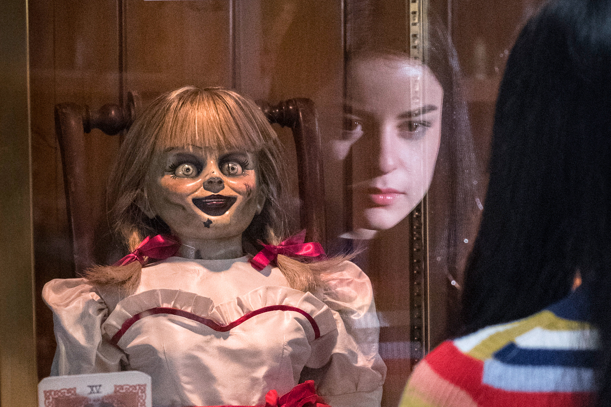

Annabelle
Story behind the movie

Through the research into the Annabelle true story, we learned that John and Mia Form are fictional characters. The real Annabelle doll was given as a birthday present by a mother to her daughter, Donna, a nursing student who was turning 28. Donna's mother purchased the Raggedy Ann Doll from a hobby store in 1970. Annabelle is an allegedly-haunted Raggedy Ann doll, housed in the now closed occult museum of the paranormal investigators Ed and Lorraine Warren. Annabelle was moved there after supposed hauntings in 1970. A character based on the doll is one of the antagonists that appear in The Conjuring Universe.